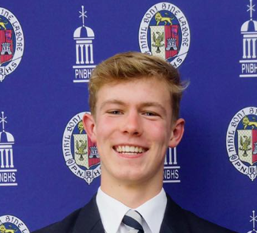
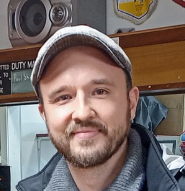
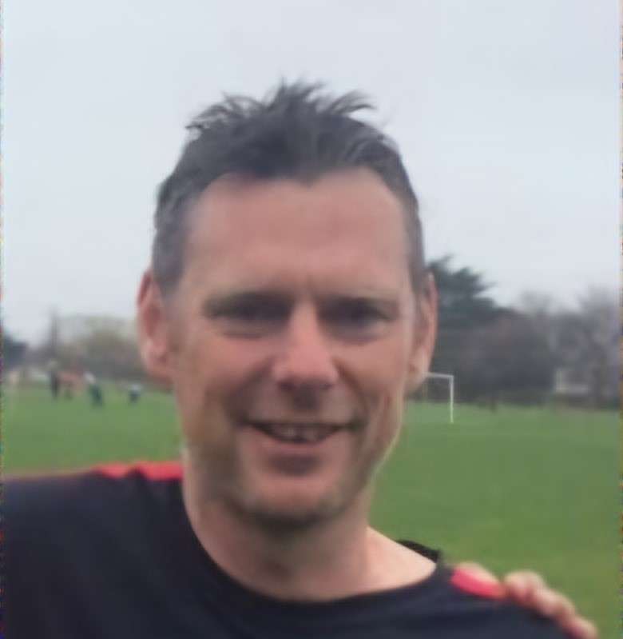
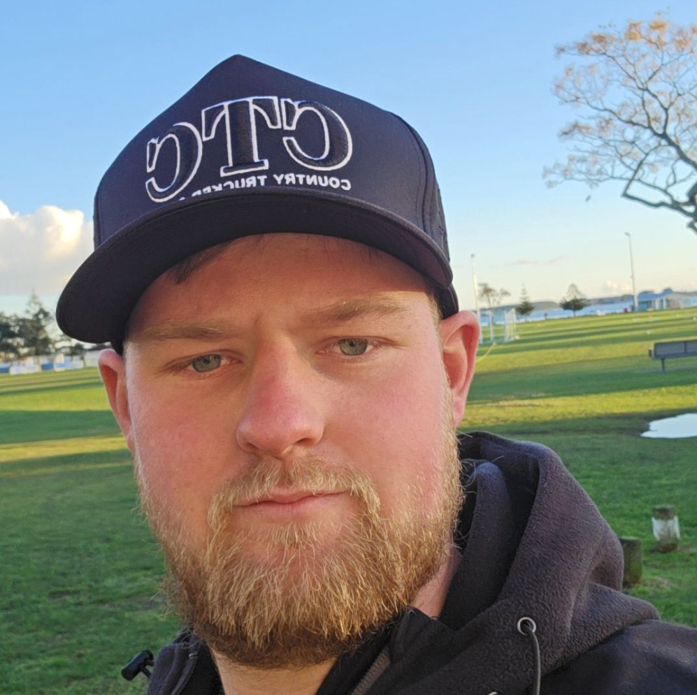

Men's First Team
Ngongotahā AFC
The senior men's side leading the club's competitive football programme.
Our Men's First Team represents the highest level of football at Ngongotahā, providing a demanding environment for players who want to compete, develop and push the standards of senior football in Rotorua.
Ngongotahā's First Team is the flagship senior side of the club. We are building a football environment based around high standards, strong competition and continual development.
With a clear pathway from junior football through youth development and into senior football, our aim is to develop players who are ready to compete at the highest level available to them.
New Zealand Football is introducing a new fully national, club-based men's competition from 2027.
The new Dettol National League will feature 12 clubs in a full winter league, with teams playing a double-round season before a finals series and Grand Final.
The competition is scheduled to begin in late March 2027, with every match broadcast live and free.

The senior men's side leading the club's competitive football programme.
Experienced coaches providing leadership, development and direction throughout our senior programme.

Head Coach
UEFA B-Licensed coach focused on strategy, performance and player development.
Assistant Coach
Supports tactical planning and individual player development.

Development Coach
Focuses on developing players and preparing the next generation of senior footballers.

Assistant Coach
Assists with training, strategy and player mentorship.
Current leading scorers from the Ngongotahā senior programme.
Jacob Dredge
Forward | 5 goals
Daniel Duyvesteyn
Winger | 4 goals
Husnein Van der Struik
Attacking Midfield | 4 goals
Kristopher Apiti
Striker | 10 goals
Joshua Gifford
Fullback | 5 goals
Hayden Booker
Centre Back | 4 goals
Our senior football programme forms part of a wider pathway at Ngongotahā, giving players the opportunity to progress from junior and youth football into senior competition.
The goal is simple: develop players within our club and create opportunities for them to compete at the highest level they can reach.
If you're looking for a serious football environment, a pathway into senior football or an opportunity to challenge yourself, Ngongotahā AFC welcomes ambitious players.
Registrations